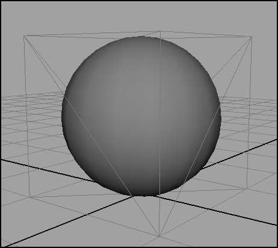
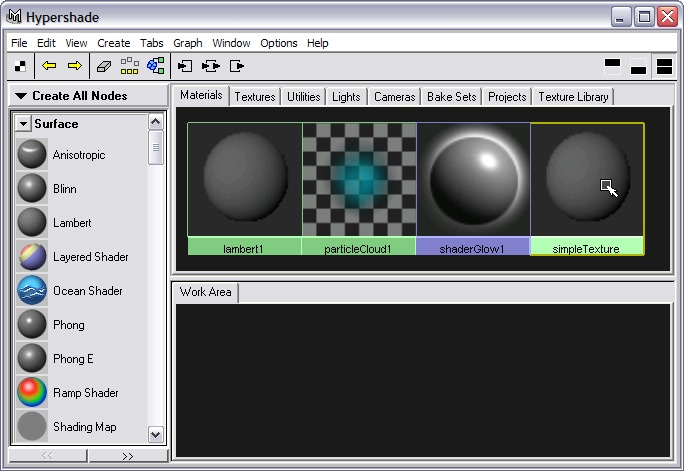
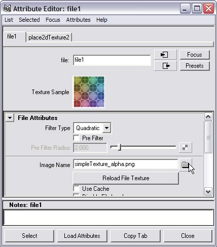
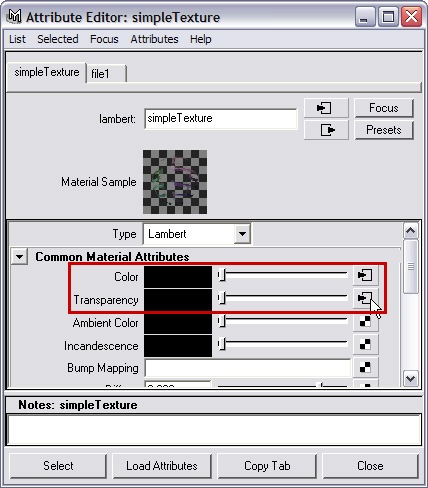
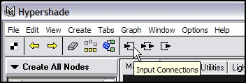
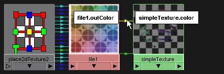
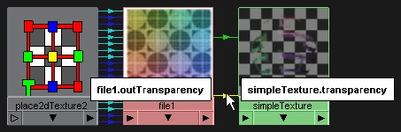
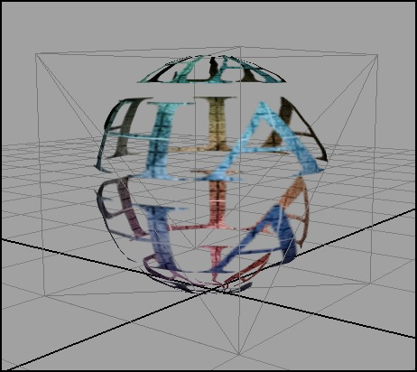
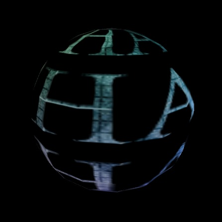

|
General Information
Creating textures for Torque shapes is fairly straightforward.
You can use any paint/image editing program to create texture maps and then
apply them to shapes in Maya. All shapes must have actual image files connected
to the material's Color attribute. Procedural textures are not supported.
Specifications
Torque supports JPG, TGA, and PNG file formats. Note:
PNG support in Maya 5.x for Windows is provided by the IMFPng plugin included
in the File
Pack.
Image file
dimensions must be powers of two (e.g. 256x256, 64x64, etc). Textures do
not have to be square (e.g. 64x128 is acceptable).
Tranparency
To make an object transparent, the texture on the
object must have an alpha channel. The amount of transparency is controlled
by the image's alpha channel. Applying an image file with an alpha channel
to the Color attribute of a material will automatically apply the image's
alpha channel to the same material's Transparency attribute.
Both PNG and TGA files support alpha channels; JPG files do not support alpha
channels.
Two-Sided Materials
Two-sided materials are supported by adding a custom
attribute named twoSided to the object.
The twoSided attribute is a boolean
value that determines whether or not the shape will export with double-sided
materials. This attribute can be added from DTS > Rendering Options > Enable
Two-Sided Materials in the dtsUtility window. Maya's double-sided attribute
is ignored.
Visibility Animation
Visibility animation is supported by adding a custom attribute
named vis to the object. The vis attribute
is a float value with a minimum value of 0 and
a maximum value of 1.
This attribute can be added from DTS > Rendering Options > Enable
Visibility Animation in the dtsUtility window. Maya's visibility attribute
is ignored.
simpleShape with Transparency
To make an object transparent, the texture on the object
must have an alpha channel. The amount of transparency is controlled by the
image's alpha channel.
1. Open simpleShapeAlphaBase.mb from the File
Pack.
The
object is already setup for export. All that is needed is the material.

2. Open HyperShade. Double-click simpleTexture to open its
attribute editor.

3. Click on the checkered button next to the Color attribute
and assign a File texture.
4. In the File Attribute Editor, locate simpleTexture2.png.

5. Close the File Attribute Editor.
You will see simpleTexture with transparency on it. When
an image with an alpha channel is applied to a material, the alpha channel
is automatically connected to the material's Transparency attribute.
6. Open simpleTexture's Attribute Editor to see that there
is a connection on its Transparency attribute.

You can also graph the material in the main HyperShade window
to see the input connections.
7. In HyperShade, select simpleTexture.
8. Click the Input Connections button
in the HyperShade toolbar.

9. Rollover the connection arrows in the Work
Area to see
the attributes that are connected to each other.


Transparent materials can be viewed in Maya's viewpanel.
10. Assign simpleTexture to simpleShape.
Be sure to press 6 to switch to Hardware Texture mode.
You will now see simpleShape with a transparent texture.

11. Save the scene as simpleShapeAlpha.mb.
12. Export the shape
and load it into the ShowTool.

You will see that the shape has a transparent material,
but it is only rendering the outer surface of the shape. This is normal behavior,
because Torque only renders the normal side of a face by default.
|